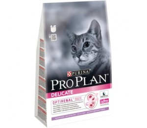

Корм для кошек Purina Pro Plan
Краткое описание товара
Корм Purina Pro Plan для взрослых кошек "Идеальное пищеварение" с индейкой и рисом, PPL Delicate Adult Turkey
Характеристики товара
| Вкус корма | индейка с рисом |
| Вес упаковки | 3 кг |
| Состав | Индейка (18%), рис, кукурузный глютен, концентрат белка гороха, сухой белок индейки, животный жир, яичный порошок, кукурузный крахмал, кукуруза, минеральные вещества, рыбий жир, вкусоароматическая кормовая добавка, дрожжи, консерванты, витамины, антиоксиданты. |
- Способствует здоровью почек.
- Поддерживает здоровье иммунной системы.
- Способствует улучшению пищевой переносимости.
- Рецепт с очень высокими вкусовыми качествами.
Подробное описание товара
Для взрослых кошек с чувствительной системой пищеварения или привередливых в еде. PRO PLAN Delicate – сбалансированный корм для кошек, который сочетает все основные питательные вещества, включая витамины и минералы.
| Вес кошки | Здоровое питание | Питание для снижения веса | Для пожилого животного |
| 2 кг | 40 г | - | 30 г |
| 3 кг | 45 г | 30 г | |
| 4 кг | 60 г | 40 г | |
| 5 кг | 75 г | 60 г | |
| 6 кг | 80 г | 60 г | |
| 8 кг | 90г | 75 г | 90 г |
| 10 кг | 120 г | 80 г | 120 г |